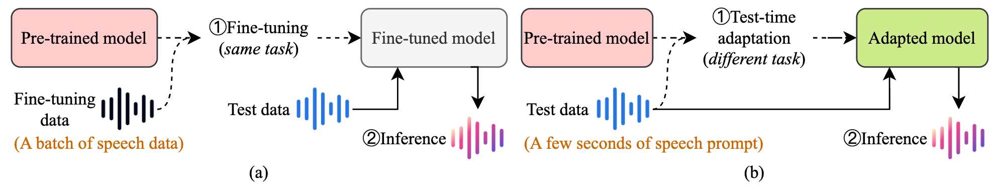

Enhancing Zero-Shot Text-to-Speech for Low-Resource Speech Prompts via Test-Time Adaptation
Anonymous Authors
Abstract
Recent advancements in zero-shot text-to-speech (TTS) have enabled the generation of high-fidelity speech for previously unseen speakers. However, these models often struggle to produce intelligible and natural speech when prompted with reference speech from low-resource languages (e.g., dialects), limiting the accessibility of TTS technology for communities speaking these languages. Moreover, existing TTS methods rely on large datasets and are hindered by long inference times. To address these challenges, we propose a novel test-time adaptation (TTA) method with a test-time bottlenecked masked modeling for zero-shot TTS models that can enhance the quality and naturalness of generated speech while maintaining efficient inference speed. Extensive experiments show that our method can improve the naturalness of generated speech when applied to low-resource speech prompts, outperforming existing techniques by a noticeable margin. Demos: https://lkj73k9d.github.io/demos/.
 Figure 1: (a) The fine-tuning paradigm performs the same task in the pre-training stage on a batch of fine-tuning data from the target speaker. (b) The TTA paradigm performs a different task to learn extra knowledge from the test data.
This demo page showcases synthesized English speech with and without the proposed test-time adaptation method using eight different Mandarin dialects as speech prompts. We borrowed some text prompts from MaskGCT and F5-TTS for the demo. All the reference speech prompts come from the KeSpeech dataset.
This page is for research demonstration purposes only.
Beijing dialect to English
| Method | Text | Reference | Generated w/o TTA | Generated w/ TTA |
|---|---|---|---|---|
| F5-TTS | I've been a silent spectator, watching species evolve, empires rise and fall. |
保证金将作为团社团的公用资金。(The deposit will be used as public funds for the group.) |
||
| GenerSpeech | Respect me and I'll nurture you; ignore me and you shall face the consequences. |
将京津冀旅游协同发展与扶贫攻坚相合作。(The coordinated development of tourism in Beijing, Tianjin, and Hebei will align with poverty alleviation efforts.) |
||
| StyleTTS | He closed his eyes, expecting that all of this could pass. |
全身心的来一次未来科技的全球之旅。(A global journey into future technology, dedicated wholeheartedly.) |
||
| SC-GlowTTS | He wore blue silk stockings, blue knee pants with gold buckles, a blue ruffled waist and a jacket of bright blue braided with gold. |
你你的产品仅仅是别的产品的一个功能。(Your product is merely a function of other products.) |
Ji-Lu dialect to English
| Method | Text | Reference | Generated w/o TTA | Generated w/ TTA |
|---|---|---|---|---|
| F5-TTS | Superheroes don't always do the thing and struggle with everyday problems like you and me. |
要求操作者具备良好的综合素质。(The operator is required to possess strong comprehensive qualities.) |
||
| GenerSpeech | I will talk about this holiday, the origins of the holiday, some of the food that people like to eat here on Thanksgiving |
嗯其中的中医药院校的直属附属医院六十四个。(There are 64 directly affiliated hospitals under traditional Chinese medicine colleges.) |
||
| StyleTTS | That's the difference between you and me morty. |
为何偏偏对关键部位避而不谈。(Why do you avoid discussing the key aspects?) |
||
| SC-GlowTTS | In short, we embarked on a mission to make America great again, for all Americans. |
不要亲杀抹杀了孩子的善良。(Don't harm the child yourself and destroy the child's kindness.) |
Jiang-Huai dialect to English
| Method | Text | Reference | Generated w/o TTA | Generated w/ TTA |
|---|---|---|---|---|
| F5-TTS | At the end of the day, our choices in food reflect our personal preferences and sometimes, even our lifestyle or belief system. |
果他就开始不依不饶地对女孩进行辱骂。(Sure enough, he began to relentlessly insult the girl.) |
||
| GenerSpeech | He closed his eyes, expecting that all of this could pass. |
作为本科生的王毅能做到这一点。(As an undergraduate, Yi Wang is capable of doing this.) |
||
| StyleTTS | However, if you choose to stay, know that the truth I unveil may forever alter the course of your journey. |
用手捏海参以参体变软为标准。(Use your hands to squeeze the sea cucumber until it softens.) |
||
| SC-GlowTTS | Yeah, that's the difference between you and me morty. I never go back to the carpet store. |
格力的空调产品格力的空调产品覆盖了比赛场馆。(Gree’s air conditioning products cover the competition venues.) |
Jiao-Liao dialect to English
| Method | Text | Reference | Generated w/o TTA | Generated w/ TTA |
|---|---|---|---|---|
| F5-TTS | Perhaps they are driven by the delicious blend of flavors, or it could be the appealing visual presentation. |
开展国际非物质文化遗产项目。(Carry out international intangible cultural heritage projects.) |
||
| GenerSpeech | In what a disgraceful light might it not strike so vain a man! |
基本上一年每个人月薪会减少八百。(Essentially, everyone’s monthly salary will decrease by 800 yuan annually.) |
||
| StyleTTS | Your safety and the pack's reputation are at stake. |
可谓达到了其军事生涯的巅峰。(It can be said that he has reached the peak of his military career.) |
||
| SC-GlowTTS | Your bravery is admirable, but sometimes bravery is knowing when to retreat. |
一个边长二十八厘米的蛋糕片就出炉了。(A cake slice with a side length of 28 cm has just come out of the oven.) |
Lan-Yin dialect to English
| Method | Text | Reference | Generated w/o TTA | Generated w/ TTA |
|---|---|---|---|---|
| F5-TTS | Artificial intelligence, in its broadest sense, is intelligence exhibited by machines, particularly computer systems. |
张锋才刚做起来自己的实验室。(Feng Zhang has just set up his own laboratory.) |
||
| GenerSpeech | Then I would never talk to that person about boa constrictors, or primeval forests, or stars. |
五十万爸妈正在关注的专业教育。(Professional education that 500,000 parents are paying attention to.) |
||
| StyleTTS | At the end of the day, our choices in food reflect our personal preferences and sometimes, even our lifestyle or belief system. |
会带来国内厂商在认识上的改变。(This will lead to a shift in the understanding of domestic manufacturers.) |
||
| SC-GlowTTS | Later recounting that quote, it melted in my mouth like raw tuna in a sushi restaurant. |
并且睡眠不足还会造成孩子精神不振。(Lack of sleep will also cause children to feel fatigued.) |
Northeastern dialect to English
| Method | Text | Reference | Generated w/o TTA | Generated w/ TTA |
|---|---|---|---|---|
| F5-TTS | His voice was low and firm, leaving a faint hint of helplessness and tenderness in the air. |
这样的经营模式无疑是具有竞争力的。(This business model is undoubtedly competitive.) |
||
| GenerSpeech | Daring dancers dazzled during dynamic dance displays, drawing delighted crowds. |
大哥呀我家炖的大鹅你过来吃不。(Brother, come to home and try the goose stew.) |
||
| StyleTTS | Active artists always appreciate artistic achievements and applaud awesome artworks. |
你小眼睛咔吧咔吧的。(Your little eyes are twinkling.) |
||
| SC-GlowTTS | Happy hikers harmoniously hiked through hilly landscapes on heavenly holidays. |
我的波棱盖都卡秃鲁皮了。(I scraped my knee against the curb.) |
Southwestern dialect to English
| Method | Text | Reference | Generated w/o TTA | Generated w/ TTA |
|---|---|---|---|---|
| F5-TTS | Jovial joggers joyfully joined jogging jaunts, justifying joyful jolliness. |
其最终带到新加坡的钱只有二千六百万元。(The amount of money he brought to Singapore was only 26 million yuan.) |
||
| GenerSpeech | I had no clue what to write even for the first letter of the alphabet. |
要想长时间集中他们的注意力。(To maintain their attention for an extended period.) |
||
| StyleTTS | I guess I'll be little less nervous to begin whatever comes next. |
并不断地伸手欢迎人群握手。(Constantly extend your hand to welcome the crowd for handshakes.) |
||
| SC-GlowTTS | What gave me the courage to take up the challenge was to lower the expectations that I'd have from these stories. |
这个故障在我们店内也出现过。(This fault has also occurred in our store.) |
Zhongyuan dialect to English
| Method | Text | Reference | Generated w/o TTA | Generated w/ TTA |
|---|---|---|---|---|
| F5-TTS | Writing has become my daily habit, and I can remember to write even without my calendar sending me a reminder. |
难道是因为很懂中国消费者。(Is it because you understand Chinese consumers so well?) |
||
| GenerSpeech | Zero is a beautiful number. Not because it is round and cute but because what it signifies. |
十月二十一日天猫双十一预售会场。(Tmall's Double Eleven pre-sale event on October 21st.) |
||
| StyleTTS | The villagers would watch him from their windows, whispering to each other about the strange things they had heard. |
店正常购买的进口车便算是大贸车的一种。(The imported cars purchased by the store are considered large trade vehicles.) |
||
| SC-GlowTTS | The system first processes the input text, breaking it down into understandable chunks like sentences or words. |
林赛在十六岁时为了能开上卡车。(Lindsay wanted to drive a truck when she was sixteen years old.) |